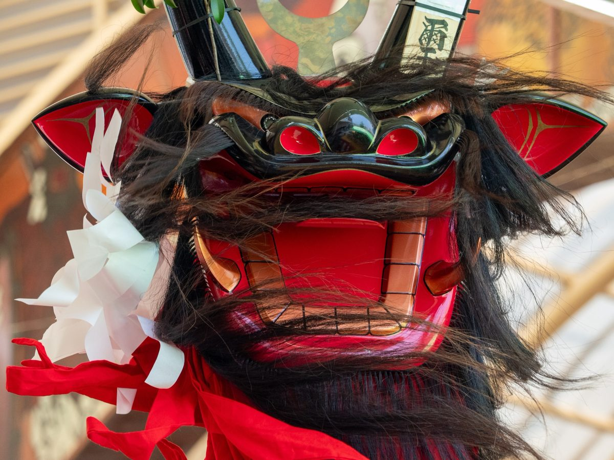
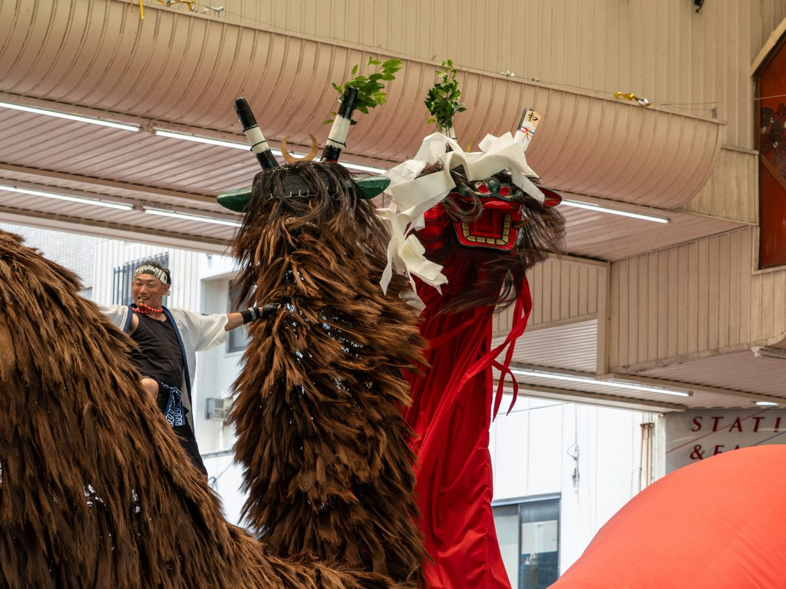
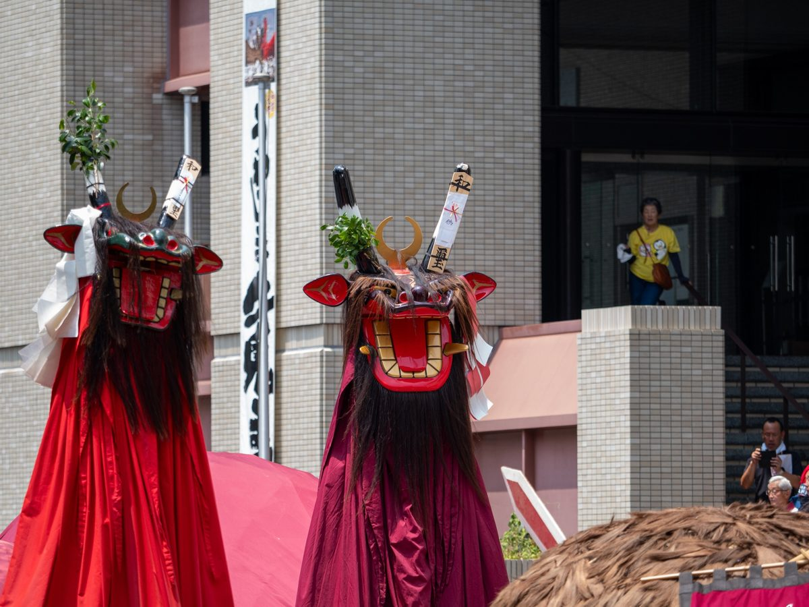
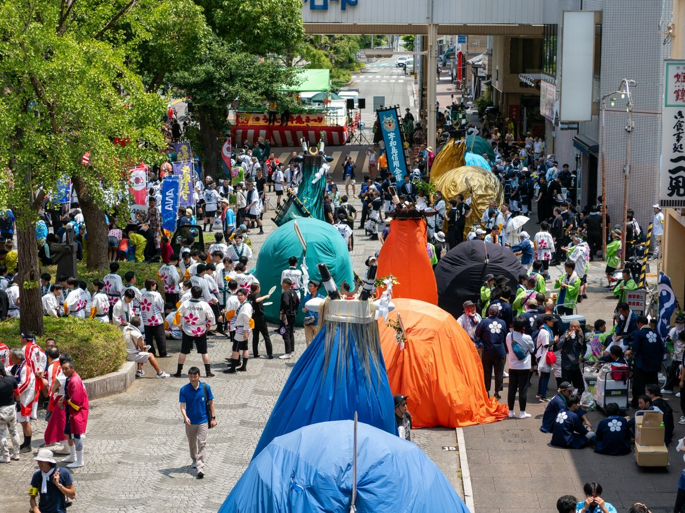

商店街の四つ角に、牛鬼たちが続々と集結。
シュロの毛に覆われた大きな体、真紅の布、剣の尾。人の頭上で揺れる鬼の頭（かしら）は、職人さんの手仕事の結晶です。
間近で見る造形の迫力に、作り手として胸が熱くなりました。
One after another, the ushi-oni gathered at the crossroads of the shopping street —
massive bodies covered in palm fiber, crimson cloth, sword-shaped tails.
Each demon head swaying above the crowd is a masterpiece of craftsmanship.
Seeing them up close, I was deeply moved as a maker myself.